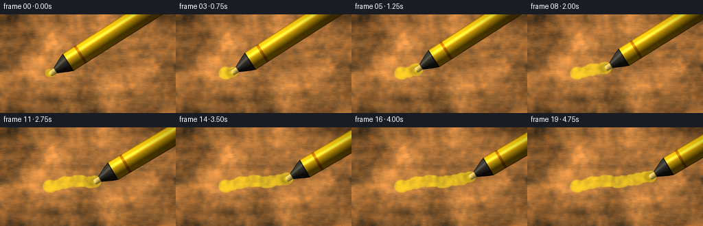
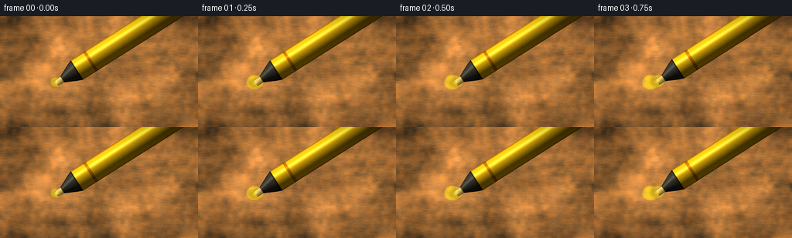

CODING AGENTS AS PIXEL WORLD MODELS
traex/DeepSeek-V4.1-Flash · phygen_034
点击播放 · 原生 RGB 像素
逐轮保存的候选
回放视频、检查图与代码变化。
每份候选均可单独播放。实际图片检查记录在下方工具轨迹中。
候选 01播放与检查图
点击播放 · 原生 RGB 像素

展开代码变化
--- 上一保存版本
+++ 本次保存版本
@@ -0,0 +1,310 @@
+from pathlib import Path
+
+import numpy as np
+from PIL import Image, ImageDraw, ImageFilter
+from scipy.ndimage import gaussian_filter
+
+import artifact_io
+
+
+CASE_DIR = Path(__file__).resolve().parent
+WIDTH, HEIGHT = 256, 144
+FRAME_COUNT = 20
+FPS = 4.0
+SS = 3
+W, H = WIDTH * SS, HEIGHT * SS
+
+
+def smoothstep(edge0, edge1, value):
+ t = np.clip((value - edge0) / (edge1 - edge0), 0.0, 1.0)
+ return t * t * (3.0 - 2.0 * t)
+
+
+def normalized_field(rng, sigma, shape=(H, W)):
+ field = gaussian_filter(rng.standard_normal(shape), sigma=sigma, mode="reflect")
+ return field / max(float(field.std()), 1e-6)
+
+
+def make_cardboard(rng):
+ yy, xx = np.mgrid[0:H, 0:W].astype(np.float32)
+ xn = xx / W
+ yn = yy / H
+
+ macro = normalized_field(rng, 34.0)
+ meso = normalized_field(rng, 7.5)
+ fine = normalized_field(rng, 0.65)
+ directional = gaussian_filter(rng.standard_normal((H, W)), sigma=(1.2, 8.0), mode="reflect")
+ directional /= max(float(directional.std()), 1e-6)
+
+ # Broad, slightly wandering corrugation ridges seen through the liner.
+ phase = 2.0 * np.pi * (
+ yy / (22.0 * SS)
+ + 0.31 * xn
+ + 0.11 * np.sin(2.0 * np.pi * (1.3 * xn + 0.35 * yn))
+ )
+ ridges = np.cos(phase)
+ ridge_light = 0.040 * np.cos(phase - 0.72) + 0.012 * np.cos(2.0 * phase + 0.4)
+
+ # A sparse layer of short paper fibers and tiny inclusions.
+ fiber_img = Image.new("L", (W, H), 128)
+ draw = ImageDraw.Draw(fiber_img)
+ for _ in range(920):
+ x = float(rng.uniform(-8, W + 8))
+ y = float(rng.uniform(-5, H + 5))
+ length = float(rng.uniform(3.0, 25.0) * SS * 0.55)
+ angle = float(rng.normal(0.0, 0.16))
+ bend = float(rng.normal(0.0, 1.4))
+ x1 = x + np.cos(angle) * length
+ y1 = y + np.sin(angle) * length
+ xm = 0.5 * (x + x1) - np.sin(angle) * bend
+ ym = 0.5 * (y + y1) + np.cos(angle) * bend
+ tone = int(rng.integers(72, 202))
+ draw.line((x, y, xm, ym, x1, y1), fill=tone, width=int(rng.integers(1, 3)))
+
+ for _ in range(95):
+ x = float(rng.uniform(0, W))
+ y = float(rng.uniform(0, H))
+ r = float(rng.uniform(0.7, 2.8) * SS)
+ tone = int(rng.integers(55, 165))
+ draw.ellipse((x - r, y - r * 0.55, x + r, y + r * 0.55), fill=tone)
+
+ fiber_img = fiber_img.filter(ImageFilter.GaussianBlur(0.55))
+ fibers = np.asarray(fiber_img, dtype=np.float32) / 255.0 - 0.5
+
+ luminance = (
+ 1.0
+ + 0.105 * macro
+ + 0.045 * meso
+ + 0.022 * fine
+ + 0.022 * directional
+ + 0.050 * fibers
+ + ridge_light
+ )
+ base = np.empty((H, W, 3), dtype=np.float32)
+ base[..., 0] = 0.665 * luminance + 0.020 * macro + 0.007 * ridges
+ base[..., 1] = 0.455 * luminance + 0.010 * macro + 0.004 * ridges
+ base[..., 2] = 0.245 * luminance + 0.003 * macro
+
+ # Subtle warm/cool patches keep the cardboard from reading as a flat fill.
+ base[..., 0] += 0.012 * meso
+ base[..., 2] -= 0.008 * meso
+ base += rng.normal(0.0, 0.0035, (H, W, 1)).astype(np.float32)
+ return np.clip(base, 0.0, 1.0), ridges, macro, meso, fine
+
+
+def stroke_center(t):
+ t = float(t)
+ x = 70.0 + 111.0 * t + 1.7 * np.sin(2.0 * np.pi * (1.15 * t + 0.08))
+ y = 84.0 - 10.5 * t + 1.8 * np.sin(2.0 * np.pi * (1.65 * t + 0.22))
+ y += 0.6 * np.sin(2.0 * np.pi * 4.0 * t)
+ return np.array([x, y], dtype=np.float32)
+
+
+def make_stroke_mask(progress, rng):
+ image = Image.new("L", (W, H), 0)
+ draw = ImageDraw.Draw(image)
+ samples = max(2, int(np.ceil(180.0 * max(progress, 0.01))))
+ ts = np.linspace(0.0, progress, samples)
+ points = [stroke_center(t) * SS for t in ts]
+
+ for index, (t, point) in enumerate(zip(ts, points)):
+ pressure = 0.92 + 0.08 * np.sin(2.0 * np.pi * (5.1 * t + 0.18))
+ pressure *= 0.93 + 0.07 * np.sin(2.0 * np.pi * 11.3 * t)
+ if progress < 0.045:
+ pressure *= smoothstep(0.0, 0.045, progress)
+ width = max(2, int(round(18.0 * SS * pressure)))
+ radius = width * 0.5
+ if index:
+ draw.line((points[index - 1][0], points[index - 1][1], point[0], point[1]),
+ fill=255, width=width)
+ draw.ellipse((point[0] - radius, point[1] - radius,
+ point[0] + radius, point[1] + radius), fill=255)
+
+ # A lightly pressed chisel edge leaves one softer side and a darker central lane.
+ mask = np.asarray(image, dtype=np.float32) / 255.0
+ mask = gaussian_filter(mask, sigma=0.42 * SS)
+ return mask
+
+
+def marker_radius(s):
+ knots_s = np.array([-1.5, 0.0, 7.0, 9.0, 23.0, 30.0, 185.0], dtype=np.float32) * SS
+ knots_r = np.array([3.9, 4.4, 4.5, 5.4, 12.1, 14.8, 15.2], dtype=np.float32) * SS
+ return np.interp(s, knots_s, knots_r)
+
+
+def marker_geometry(tip, angle):
+ yy, xx = np.mgrid[0:H, 0:W].astype(np.float32)
+ dx = xx - tip[0] * SS
+ dy = yy - tip[1] * SS
+ bx = np.cos(angle)
+ by = -np.sin(angle)
+ nx = -by
+ ny = bx
+ s = dx * bx + dy * by
+ v = dx * nx + dy * ny
+ radius = marker_radius(s)
+ q = np.clip(v / np.maximum(radius, 0.001), -1.0, 1.0)
+ inside = (s >= -1.5 * SS) & (s < 190.0 * SS) & (np.abs(v) <= radius)
+ return s, v, q, radius, inside, (nx, ny)
+
+
+def render_marker(tip, angle):
+ s, v, q, radius, inside, normal = marker_geometry(tip, angle)
+ nx, ny = normal
+ nz = np.sqrt(np.clip(1.0 - q * q, 0.0, 1.0))
+
+ light = np.array([-0.48, -0.73, 0.49], dtype=np.float32)
+ light /= np.linalg.norm(light)
+ lambert = np.clip(nx * q * light[0] + ny * q * light[1] + nz * light[2], 0.0, 1.0)
+ broad_light = 0.27 + 0.78 * lambert
+ sheen = np.exp(-((q + 0.45) / 0.16) ** 2) * (0.45 + 0.55 * lambert)
+
+ body = s >= 30.0 * SS
+ collar = (s >= 8.0 * SS) & (s < 30.0 * SS)
+ nib = s < 8.0 * SS
+
+ rgb = np.zeros((H, W, 3), dtype=np.float32)
+ yellow = np.array([0.99, 0.78, 0.075], dtype=np.float32)
+ orange = np.array([0.83, 0.42, 0.025], dtype=np.float32)
+
+ body_tint = yellow[None, None, :] * broad_light[..., None]
+ body_tint += orange[None, None, :] * (0.11 * (1.0 - nz[..., None]))
+ body_tint += np.array([1.0, 0.95, 0.70], dtype=np.float32) * (0.34 * sheen[..., None])
+ edge = smoothstep(0.80, 1.0, np.abs(q))
+ body_tint *= (1.0 - 0.19 * edge[..., None])
+
+ # A narrow molded band gives the barrel a readable manufactured surface.
+ band = body & (s > 49.0 * SS) & (s < 53.0 * SS)
+ body_tint[band] = body_tint[band] * np.array([0.78, 0.62, 0.30], dtype=np.float32)
+ rgb[body] = body_tint[body]
+
+ collar_tint = np.array([0.25, 0.245, 0.215], dtype=np.float32)[None, None, :] * broad_light[..., None]
+ collar_tint += np.array([0.75, 0.74, 0.68], dtype=np.float32) * (0.20 * sheen[..., None])
+ collar_tint *= (1.0 - 0.26 * edge[..., None])
+ rgb[collar] = collar_tint[collar]
+
+ nib_tint = np.array([0.93, 0.81, 0.43], dtype=np.float32)[None, None, :] * (0.55 + 0.55 * lambert[..., None])
+ nib_tint *= (1.0 - 0.24 * edge[..., None])
+ rgb[nib] = nib_tint[nib]
+
+ # Dark seams at the nib/collar/barrel transitions sharpen the silhouette.
+ seam = inside & (
+ ((s > 7.1 * SS) & (s < 8.4 * SS))
+ | ((s > 28.7 * SS) & (s < 30.3 * SS))
+ )
+ rgb[seam] *= 0.54
+ outer_edge = inside & ((radius - np.abs(v)) < 0.9 * SS)
+ rgb[outer_edge] *= 0.76
+
+ alpha = inside.astype(np.float32)
+ return rgb, alpha, inside
+
+
+def shadow_from_mask(mask, offset_x, offset_y, blur, opacity):
+ shifted = np.zeros_like(mask)
+ ox = int(round(offset_x))
+ oy = int(round(offset_y))
+ src_x0 = max(0, -ox)
+ src_y0 = max(0, -oy)
+ dst_x0 = max(0, ox)
+ dst_y0 = max(0, oy)
+ copy_w = W - abs(ox)
+ copy_h = H - abs(oy)
+ shifted[dst_y0:dst_y0 + copy_h, dst_x0:dst_x0 + copy_w] = mask[
+ src_y0:src_y0 + copy_h, src_x0:src_x0 + copy_w
+ ]
+ return gaussian_filter(shifted, sigma=blur) * opacity
+
+
+def render_frame(index, base, ridges, macro, meso, fine, rng):
+ progress_raw = smoothstep(0.0, 1.0, (index + 0.45) / 19.25)
+ progress = 0.025 + 0.95 * progress_raw
+ tip = stroke_center(progress)
+ angle = np.deg2rad(31.5 + 1.3 * np.sin(2.0 * np.pi * (0.75 * progress + 0.12)))
+
+ out = base.copy()
+
+ stroke = make_stroke_mask(progress, rng)
+ texture = np.clip(0.82 + 0.105 * meso + 0.045 * fine + 0.035 * ridges, 0.62, 1.02)
+ ink_alpha = stroke * texture
+ halo = gaussian_filter(stroke, sigma=2.2 * SS) * 0.085
+ ink_alpha = np.clip(ink_alpha * 0.66 + halo, 0.0, 0.82)
+
+ # The freshly laid end is a little wetter and glossier.
+ yy, xx = np.mgrid[0:H, 0:W].astype(np.float32)
+ tip_px = tip * SS
+ wet_distance = ((xx - tip_px[0]) / (13.0 * SS)) ** 2 + ((yy - tip_px[1]) / (8.5 * SS)) ** 2
+ wet = np.exp(-2.2 * wet_distance) * stroke
+ ink_alpha = np.clip(ink_alpha + 0.10 * wet, 0.0, 0.84)
+
+ ink_color = np.array([1.0, 0.88, 0.13], dtype=np.float32)
+ out = out * (1.0 - ink_alpha[..., None]) + ink_color[None, None, :] * ink_alpha[..., None]
+ out += np.array([0.42, 0.34, 0.02], dtype=np.float32) * (0.075 * wet[..., None])
+
+ # The marker floats above the cardboard, so its shadow is soft and offset.
+ marker_rgb, marker_alpha, marker_mask = render_marker(tip, angle)
+ body_shadow = shadow_from_mask(marker_mask, -8.0 * SS, 10.5 * SS, 5.2 * SS, 0.42)
+ out *= (1.0 - 0.48 * body_shadow[..., None])
+
+ contact_img = Image.new("L", (W, H), 0)
+ contact_draw = ImageDraw.Draw(contact_img)
+ cx, cy = tip_px
+ contact_draw.ellipse((cx - 10.5 * SS, cy - 5.0 * SS, cx + 7.5 * SS, cy + 7.5 * SS), fill=180)
+ contact_shadow = gaussian_filter(np.asarray(contact_img, dtype=np.float32) / 255.0, sigma=2.0 * SS)
+ out *= (1.0 - 0.30 * contact_shadow[..., None])
+
+ # A restrained warm bounce from the yellow barrel lands on nearby fibers.
+ bounce = shadow_from_mask(marker_mask, -4.0 * SS, 7.0 * SS, 8.0 * SS, 0.16)
+ out += np.array([0.18, 0.12, 0.012], dtype=np.float32) * bounce[..., None]
+
+ out = out * (1.0 - marker_alpha[..., None]) + marker_rgb * marker_alpha[..., None]
+
+ # Tiny specular glint at the wet chisel contact.
+ glint = np.exp(-(
+ ((xx - (cx - 1.2 * SS)) / (3.8 * SS)) ** 2
+ + ((yy - (cy + 0.6 * SS)) / (2.1 * SS)) ** 2
+ ))
+ out += np.array([0.72, 0.64, 0.32], dtype=np.float32) * (0.24 * glint[..., None])
+
+ return np.clip(out, 0.0, 1.0)
+
+
+def finish_frame(image, index, rng):
+ image = Image.fromarray(np.clip(image * 255.0, 0.0, 255.0).astype(np.uint8), "RGB")
+ image = image.resize((WIDTH, HEIGHT), Image.Resampling.LANCZOS)
+ arr = np.asarray(image, dtype=np.float32) / 255.0
+
+ yy, xx = np.mgrid[0:HEIGHT, 0:WIDTH].astype(np.float32)
+ xn = (xx + 0.5) / WIDTH * 2.0 - 1.0
+ yn = (yy + 0.5) / HEIGHT * 2.0 - 1.0
+ radial = np.clip(0.72 * xn * xn + 0.80 * yn * yn, 0.0, 1.25)
+ vignette = 1.0 - 0.16 * radial ** 1.35
+ vignette *= 0.985 + 0.015 * np.cos(2.0 * np.pi * (0.18 * xn - 0.10 * yn))
+ arr *= vignette[..., None]
+
+ # Gentle bloom around the plastic barrel and wet ink.
+ luminance = arr[..., 0] * 0.30 + arr[..., 1] * 0.59 + arr[..., 2] * 0.11
+ bright = np.clip((luminance - 0.70) / 0.30, 0.0, 1.0)
+ bloom = gaussian_filter(bright, sigma=2.3)
+ arr += bloom[..., None] * np.array([0.045, 0.039, 0.014], dtype=np.float32)
+
+ arr = np.clip((arr - 0.5) * 1.045 + 0.5, 0.0, 1.0)
+ arr *= np.array([1.015, 1.000, 0.975], dtype=np.float32)
+ arr += rng.normal(0.0, 0.0065, (HEIGHT, WIDTH, 1)).astype(np.float32)
+ return np.clip(arr * 255.0 + 0.5, 0.0, 255.0).astype(np.uint8)
+
+
+def main():
+ rng = np.random.default_rng(34019)
+ base, ridges, macro, meso, fine = make_cardboard(rng)
+ frames = []
+ for index in range(FRAME_COUNT):
+ highres = render_frame(index, base, ridges, macro, meso, fine, rng)
+ frames.append(finish_frame(highres, index, rng))
+
+ frames = np.stack(frames, axis=0)
+ artifact_io.save(frames, CASE_DIR)
+
+
+if __name__ == "__main__":
+ main()
候选 02播放与检查图
点击播放 · 原生 RGB 像素


展开代码变化
--- 上一保存版本
+++ 本次保存版本
@@ -243,7 +243,7 @@
# The marker floats above the cardboard, so its shadow is soft and offset.
marker_rgb, marker_alpha, marker_mask = render_marker(tip, angle)
- body_shadow = shadow_from_mask(marker_mask, -8.0 * SS, 10.5 * SS, 5.2 * SS, 0.42)
+ body_shadow = shadow_from_mask(marker_mask, 8.0 * SS, 10.5 * SS, 5.2 * SS, 0.42)
out *= (1.0 - 0.48 * body_shadow[..., None])
contact_img = Image.new("L", (W, H), 0)
@@ -254,7 +254,7 @@
out *= (1.0 - 0.30 * contact_shadow[..., None])
# A restrained warm bounce from the yellow barrel lands on nearby fibers.
- bounce = shadow_from_mask(marker_mask, -4.0 * SS, 7.0 * SS, 8.0 * SS, 0.16)
+ bounce = shadow_from_mask(marker_mask, -3.0 * SS, -4.0 * SS, 8.0 * SS, 0.16)
out += np.array([0.18, 0.12, 0.012], dtype=np.float32) * bounce[..., None]
out = out * (1.0 - marker_alpha[..., None]) + marker_rgb * marker_alpha[..., None]
@@ -270,7 +270,7 @@
def finish_frame(image, index, rng):
- image = Image.fromarray(np.clip(image * 255.0, 0.0, 255.0).astype(np.uint8), "RGB")
+ image = Image.fromarray(np.clip(image * 255.0, 0.0, 255.0).astype(np.uint8))
image = image.resize((WIDTH, HEIGHT), Image.Resampling.LANCZOS)
arr = np.asarray(image, dtype=np.float32) / 255.0
可观测工具轨迹
实际执行的命令与返回图片。
命令 1exit 0
/bin/bash -c "pwd && rg --files -g '"'!*node_modules*'"' -g '"'!*.mp4'"' -g '"'!*.mov'"' | sed -n '1,160p'"
命令 2exit 0
/bin/bash -c 'cat prompt.txt'
命令 3exit 0
/bin/bash -c 'cat GENERATION_RULES.md'
命令 4exit 0
/bin/bash -c 'cat task_spec.json'
命令 5exit 0
/bin/bash -c "ls -la && find . -maxdepth 2 -type f | sed -n '1,200p'"
命令 6exit 0
/bin/bash -c "sed -n '1,260p' artifact_io.py"
命令 7exit 0
/bin/bash -c "sed -n '1,240p' player_template.html"
命令 8exit 0
/bin/bash -c "python - <<'PY'
import PIL, numpy
print('PIL', PIL.__version__)
print('numpy', numpy.__version__)
try:
import scipy; print('scipy', scipy.__version__)
except Exception as e: print('no scipy', e)
PY"命令 9exit 0
/bin/bash -c 'python generate.py'
命令 10exit 0
/bin/bash -c "python - <<'PY'
from pathlib import Path
import numpy as np
from PIL import Image
frames=np.stack([np.asarray(Image.open(p)) for p in sorted(Path('frames').glob('*.png'))])
print('shape', frames.shape, frames.dtype)
for i in [0,5,10,15,19]:
f=frames[i]
# yellow-pixel proxy: high R/G, lower B
m=(f[...,0]>120)&(f[...,1]>90)&(f[...,0]>f[...,2]*1.45)&(f[...,1]>f[...,2]*1.3)
ys,xs=np.where(m)
print(i, 'mean', f.mean((0,1)).round(1), 'yellow_bbox', (xs.min(),ys.min(),xs.max(),ys.max()) if len(xs) else None, 'yellow%', round(100*m.mean(),1))
print('adjacent mean abs diff', np.abs(frames[1:].astype(float)-frames[:-1]).mean().round(2))
print('artifacts', [(p.name,p.stat().st_size) for p in sorted(Path('.').glob('*')) if p.is_file()])
PY"命令 11exit 0
/bin/bash -c "python - <<'PY'
from PIL import Image
im=Image.open('inspection.png')
im.resize((1024,330), Image.Resampling.NEAREST).save('.tmp/inspection_zoom.png')
im2=Image.open('frames/10.png')
im2.resize((1024,576), Image.Resampling.NEAREST).save('.tmp/frame10_zoom.png')
PY"命令 12exit 0
/bin/bash -c 'command -v chafa || true; command -v viu || true; command -v jp2 || true; command -v img2txt || true; command -v ffmpeg || true'
命令 13exit 0
/bin/bash -c "python - <<'PY'
from PIL import Image
import numpy as np
for fn in ['frames/00.png','frames/10.png','frames/19.png']:
a=np.asarray(Image.open(fn)).astype(float)
# classify strongest yellow marker by saturation/value; print block medians 32x16 cells
hsv=np.asarray(Image.open(fn).convert('HSV')).astype(float)
for y in range(0,144,12):
row=''
for x in range(0,256,8):
p=a[y:y+12,x:x+8].mean((0,1))
H,S,V=hsv[y:y+12,x:x+8].mean((0,1))
if S>145 and V>150 and 15<H<50: c='M'
elif V<55: c='#'
elif S<35: c='.'
elif V<110: c='d'
elif H<35: c='c'
else: c='o'
row+=c
print(row)
print(fn)
PY"命令 14exit 0
/bin/bash -c "python - <<'PY'
from PIL import Image
import numpy as np
for fn in ['frames/00.png','frames/05.png','frames/10.png','frames/15.png','frames/19.png']:
im=Image.open(fn); a=np.asarray(im).astype(float); hsv=np.asarray(im.convert('HSV')).astype(float)
print('\\n',fn)
for y in range(0,144,8):
row=''
for x in range(0,256,4):
p=a[y:y+8,x:x+4].mean((0,1)); H,S,V=hsv[y:y+8,x:x+4].mean((0,1))
if S>150 and V>160 and 36<H<70: c='M'
elif V<45: c='#'
elif S<30: c='.'
elif V<100: c='d'
elif H<30: c='c'
else: c='o'
row+=c
print(row)
PY"命令 15exit 0
/bin/bash -c "python - <<'PY'
from PIL import Image
import numpy as np
for fn in ['frames/00.png','frames/05.png','frames/10.png','frames/15.png','frames/19.png']:
im=Image.open(fn); a=np.asarray(im).astype(float); hsv=np.asarray(im.convert('HSV')).astype(float)
print('\\n',fn)
for y in range(0,144,8):
row=''
for x in range(0,256,4):
p=a[y:y+8,x:x+4].mean((0,1)); H,S,V=hsv[y:y+8,x:x+4].mean((0,1))
if S>150 and V>160 and 36<H<70: c='M'
elif V<45: c='#'
elif S<30: c='.'
elif V<100: c='d'
elif H<30: c='c'
else: c='o'
row+=c
print(row)
PY"命令 16exit 0
/bin/bash -c 'python generate.py'
命令 17exit 0
/bin/bash -c "python - <<'PY'
from pathlib import Path
from PIL import Image
import numpy as np
for idx in (0,5,10,15,19):
im=Image.open(f'frames/{idx:02d}.png').convert('HSV')
a=np.asarray(im).astype(float)
# Barrel is the bright yellow region above the stroke.
yy,xx=np.mgrid[:144,:256]
m=(a[...,0]>34)&(a[...,0]<70)&(a[...,1]>175)&(a[...,2]>150)&(yy<72)
ys,xs=np.where(m)
print(idx, 'barrel bbox', (int(xs.min()),int(ys.min()),int(xs.max()),int(ys.max())) if len(xs) else None, 'pixels', int(m.sum()))
print('files', len(list(Path('frames').glob('*.png'))), Path('inspection.png').stat().st_size, Path('transition_check.png').stat().st_size)
PY"命令 18exit 0
/bin/bash -c "python -m py_compile generate.py && python - <<'PY'
from pathlib import Path
import numpy as np
from PIL import Image
spec=np.load('pixels.npz')['pixels']
frames=np.stack([np.asarray(Image.open(p).convert('RGB')) for p in sorted(Path('frames').glob('*.png'))])
packed=((frames[...,0].astype(np.uint32)<<16)|(frames[...,1].astype(np.uint32)<<8)|frames[...,2]).transpose(1,2,0)
print('tensor', spec.shape, spec.dtype, 'match', np.array_equal(spec, packed))
print('frames', frames.shape, frames.dtype, 'range', (int(frames.min()), int(frames.max())))
diffs=np.abs(frames[1:].astype(np.int16)-frames[:-1]).mean((1,2,3))
print('motion', 'min/mean/max', round(float(diffs.min()),2), round(float(diffs.mean()),2), round(float(diffs.max()),2))
print('all finite', np.isfinite(frames).all(), 'artifact bytes', sum(p.stat().st_size for p in Path('.').glob('*') if p.is_file()))
print('index ready marker', 'window.__pixelReady=true' in Path('index.html').read_text())
PY"保存候选 2 份；完成命令 18 次；可验证图片返回 0 张。原始 API 响应与完整日志保留在本地。